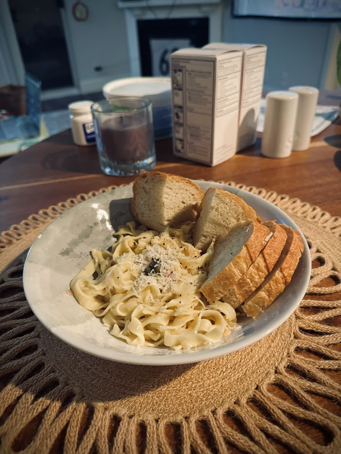

Fettucine with butter sauce
Serving size: Makes 4 servings
Fresh pasta with bread
Ingredients
- 400g semolina flour
- Flour for dusting (either regular or semolina)
- 200g water
- 1/3 stick salted butter, cut in cubes, then frozen
- 1 shallot, minced finely
- White wine
- Capers (and a few spoonfuls of their brine)
- Freshly ground black pepper
- Grated parmesan cheese
Instructions
Mix semolina flour and water, then knead for 10 minutes, cover in plastic wrap, and let it sit for an hour. Roll into a flat sheet until it is just barely thin enough you can see your hand through it, then cut into half centimeter thick strips. Coat in flour and toss so that they don't stick. For beurre blanc sauce, put a bit of butter in a pan with the shallots, cook until fragrant, then add enough white wine to cover the shallots, along with a bit of caper juice. Cook until you're happy with the amount of alcohol left, then add the rest of the butter. Keeping the butter cold right before putting it in will prevent it from breaking, so that it can emulsify with the alcohol and the starch in the pasta water. Boil water, then throw the pasta in and cook until it floats, about 30 seconds. Put the pasta in the sace (while it's dripping with pasta water -- you want some water and starch added) and cook until the sauce is sufficiently stuck to the pasta.
Serving suggestion
Serve fresh with capers, black pepper, and parmesan cheese on top. If you don't like capers, leave them out and use vinegar in place of their brine.